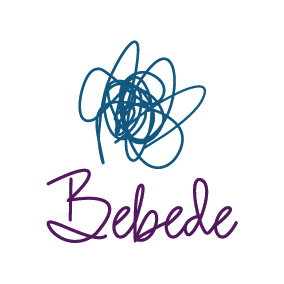

+++
title = "Bebede s.r.o. - PPC špecialista a administratívny pracovník"
slug = "73"
+++

<div class="container mb-5">
    <div class="row justify-content-around">
        <div class="col-6 col-md-2 mt-3">
        </div>
        <div class="col-md-8">
            <h1>Bebede s.r.o.</h1>
          <h2>PPC špecialista a administratívny pracovník</h2>
</h2>
            <p>
                <strong>Miesto: </strong>práca z domu, v prípade potreby asistencia na evente
<br/>
                <strong>Forma: </strong>TPP (polovičný, skrátený úväzok)<br/>
                <strong>Flexi faktor: </strong> skrátený úväzok 2-4 hodiny denne -  home office, v prípade potreby asistencia na evente
                                                <br/>
                <strong>Plat: </strong>350 - 500 EUR/mesiac, podľa počtu dohodnutých pracovných hodín skráteného úväzku
<br/>
                <strong>Očakávaný nástup: </strong>September 2023<br/>
                <strong>Dátum pridania ponuky: </strong>20.4.2023<br/>
            </p>
            <h2>O firme </h2>
            <p>
          Malá eventová agentúra zameraná na organizovanie podujatí na kľúč ako sú konferencie, 
              školenia, workshopy, prezentácie, ale aj team buildingy, večierky a rôzne iné 
              spoločenské podujatia s programom podľa špecifikácie klienta.

<a href="https://www.bebede.sk/"target="_blank">www.bebede.sk</a>

      </p>
            

            <h2>Náplň práce</h2>
         <ul>
         <li>Tvorba a optimalizácia Google Ads kampaní
         <li>Tvorba organického a plateného obsahu na FB, IG, LinkedIn
         <li>Content manžement webového obsahu (Wordpress)
         <li>Sledovanie KPIs, analýza v Google Analytics
         <li>Sledovanie trendov v oblasti digitálneho marketingu
         <li>Administratívne práce podľa potreby (rešerš dodávateľov, analýza konkurencie, príprava podkladov k podujatiam a pod.)
         <li>Osobná asistencia na podujatiach podľa potreby
      </ul>
      
      <h2>Požiadavky</h2>
     <p> Prax na pozícii/v oblasti:<br>
       PPC špecialista aspoň 1 rok
       </p>
      <p>Osobnostné predpoklady a zručnosti:</p>
      <ul><li>Minimálne 1-ročné skúsenosti so správou PPC kampaní
          <li>Analytické schopnosti a zmysel pre detail
          <li>Schopnosť pracovať s dátami, ich analýzou a spracovaním
            <li>Schopnosť tvoriť kreatívne texty
              <li>Google Ads certifikácia
                <li>Orientácia v Google Analytics 4
                  <li>Skúsenosť s Facebook a Instagram Ads
                    <li>Orientácia vo Wordpress
                      <li>Proaktívny prístup a selfmanažment
                        <li>Komunikačné schopnosti
                          <li>Chuť učiť sa nové veci
            </ul>
      
         
      
            <h2>Doplňujúce info</h2>
      <ul>
        <li>Home office 
          <li>Flexibilný pracovný čas
            <li>Priateľská a otvorená komunikácia v tíme
              <li>Príležitosť pracovať na zadaniach z rôznych segmentov
                <li>Osobná účasť na podujatiach
                  <li>Možnosť kariérneho rastu, rozvíjanie odborných schopností, nadobudnutie praktických skúseností
      </ul>
                    
            <h2>Ďalší postup</h2>
<p>Prosíme o zaslanie životopisu na <a href="mailto:nagyova@bebede.sk">nagyova@bebede.sk</a>. 
  </p>
        </div>
        <div class="col-md-2"></div>
    </div>
    <div class="row">
        <div class="col offset-md-2 mt-5">{{< back >}}</div>
    </div>
</div>
